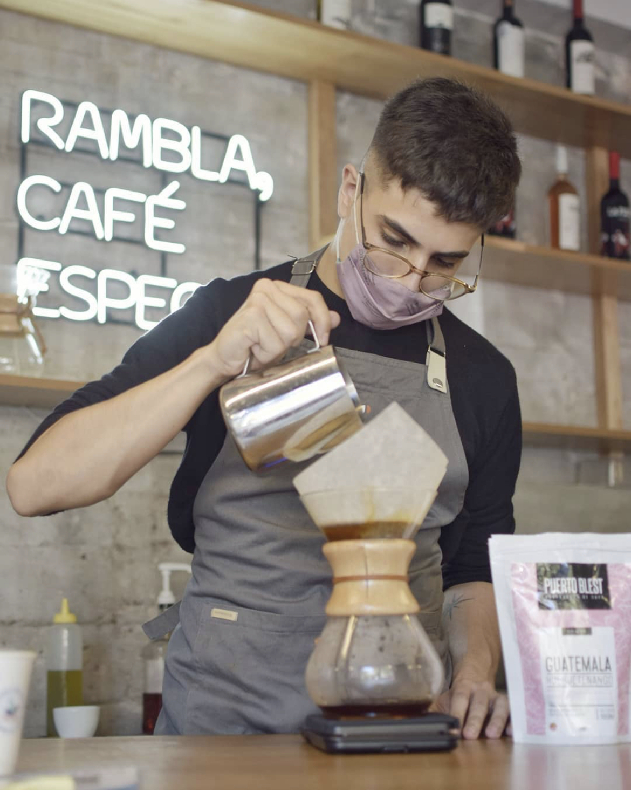

En Rambla tratamos de hacer el mejor café de especialidad posible, y el mejor café de especialidad es el que está pensado, cuidado, seleccionado, tostado y elaborado con los mejores parámetros de preparación.Todos los granos de café que usamos y vendemos en Rambla son de alta calidad, bien llamados granos de café de especialidad. Para que tengan un mayor entendimiento, todos los granos de café se pueden clasificar sobre 100. Este proceso de calificación se llama “catación”. Y de acuerdo con Specialty Coffee Association (SCA), el café de especialidad es café Arábica con una puntuación de taza de 80 + puntos.
Los cafés que se encuentran a la venta para consumir en nuestro local o para take away son preparados con un grano Nicaraguense de la región Matagalpa, cosechada a 1100mts de altura. Su proceso de recolección es manual lo que permite seleccionar cada fruta de una manera única. Por eso, en Rambla te ofrecemos un café acogedor de sabores cálidos con una acidez muy balanceada.
Los cafés que se encuentran a la venta, para que los puedas preparar en tu casa, pueden ser despachados en grano o molidos. Cuando lo pedís molido, vamos a preguntarte que tipo de cafetera tenés y de esa manera moler el café específicamente para tu cafetera. Así, vas a poder disfrutar de nuestro mágico café desde tu casa.
Que estas esperando? En Rambla te invitamos a que pases, a que te quedes en el solcito de la verada o en la barra espectacular que tenemos con lugar adentro y afuera. Si estas apurado, pasas compras el café y lo vas tomando de camino a donde tengas que ir.
Te esperamos!
